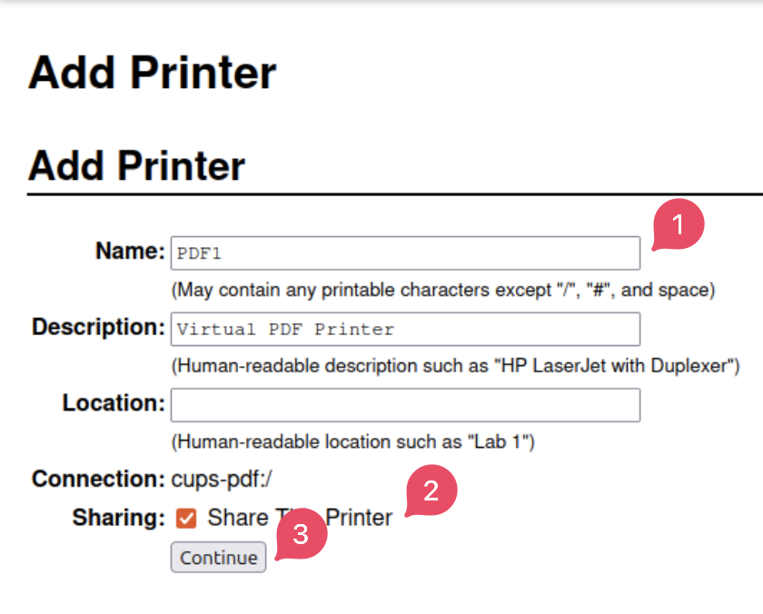

Activitat 1
Compartir una impressora de Linux a Windows
La vostra oficina disposa d'una impressora centralitzada que està connectada a un equip amb Linux. La resta d'ordinadors de l'oficina fan servir Windows 10. Has de fer que tots els usuaris puguin utilitzar la impressora.
1. Posar IP a les dues maquines
Les dues màquines han d'estar a la mateixa xarxa. Podem observar les IP corresponents a aquest diagrama.

2. Instal·lar servei d'impressora a Linux.
Instal·lar CUPS i CUPS printer driver.
sudo apt update
sudo apt install cups
3. Compartim la impressora per CUPS.
Primer obrirem http://localhost:631 al navegador. Despres clicarem a la pestanya de administració i seguirem els pasos.

4. Canviar el fitxer de configuració de CUPS.
Afegir, si no està ja, aquestes línies al fitxer de configuració /etc/cups/cupsd.conf
# Permitir acceso desde otros equipos
Listen 0.0.0.0:631
Listen [::]:631
# Permitir acceso a la configuración de CUPS desde cualquier IP de la red
<Location />
Order allow,deny
Allow @LOCAL
</Location>
<Location /admin>
Order allow,deny
Allow @LOCAL
</Location>
<Location /printers>
Order allow,deny
Allow @LOCAL
</Location>
5. Reiniciar el servei CUPS.
sudo systemctl restart cups
6. Afegir impressora a l'ordinador client.